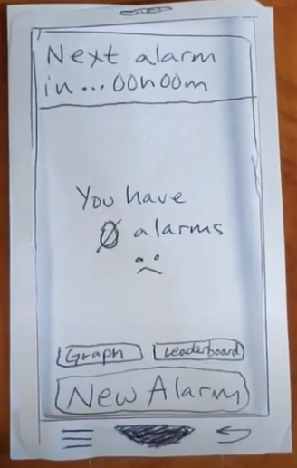
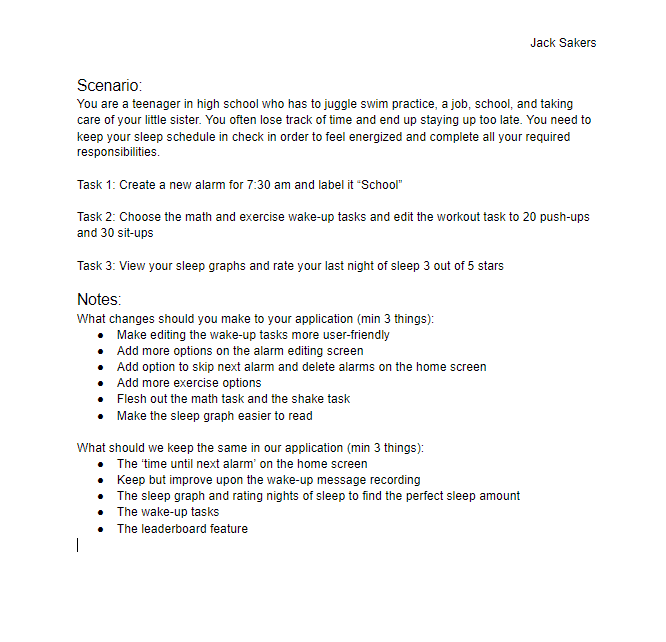

Problem Statement: Waking Up Early

Our users wish to wake up earlier and have more time to accomplish their tasks everyday. Making this change can often be difficult and our solution should provide users with an easier way to change their sleeping habits.
Affinity Diagram: Waking Up Early

Here is the outcome of a brainstorm session among the founding group members.
Persona: 4 Personas Relating to Our Sleep App

Here are 4 examples of potential users of our app. Each one of these people could benefit from different aspects of our app.
Storyboard: 4 Storyboards Relating to Our Sleep App

Here are 4 storyboards of the potential uses for our app. Each scenario offers different ways for out app to be utilized.
Sketch: Some Potential Screens of Our Sleep App

Here are some potential screens and some functionality of our sleep app.
Paper Prototype: A Demonstration of Some Functionality
Here is a video of a simple paper version of our alarm app.
Usability Testing: Data on Users and Their Interactions with the Prototype
Here is a scenario and 3 tasks that were to be completed by a user. The data on the user's struggles and their comments are included.
Low Fidelity Prototype: Example of App Functionality and Design

Here is a low-fidelity prototype of our sleep app. It demonstrates some broad ideas as how our app works and looks.
High Fidelity Prototype: Highly Functional and Designed

Here is a high fidelity prototype that is more similar to the final product in design and function.
High Fidelity Presentation: Presentation of Features and User Base

Here is a presentation that describes our app's functionality, potential user base, need, and background.